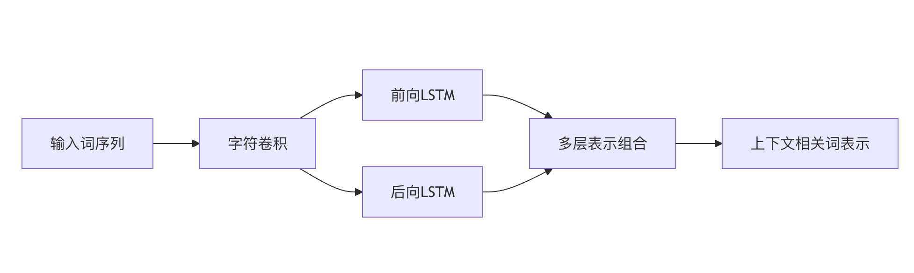

テキスト表現方法
テキスト表現は自然言語処理（NLP）における基礎的なタスクであり、非構造化テキストデータをコンピュータが処理できる数値形式に変換します。
本記事では、NLPでよく使われるテキスト表現方法を、伝統的な手法から現代の深層学習技術まで体系的に紹介し、読者がこの中核的概念を包括的に理解できるようにします。
伝統的テキスト表現
バッグ・オブ・ワーズ（Bag of Words）
バッグ・オブ・ワーズは最も単純なテキスト表現方法の一つで、テキストを順序のない単語の集合とみなします。
基本概念
- 単語の順序や文法を無視し、単語が出現するかどうかのみに注目します
- 語彙表を構築し、各単語がドキュメント内で出現する回数を集計します
- 最終的に高次元スパースベクトルとして表現されます
コード例
実例
corpus = [
'This is the first document.',
'This document is the second document.',
'And this is the third one.',
'Is this the first document?'
]
vectorizer = CountVectorizer()
X = vectorizer.fit_transform(corpus)
print(vectorizer.get_feature_names_out())
print(X.toarray())
長所と短所の分析
✅ 長所：
- 実装が簡単で、計算効率が高い
- 小規模なデータセットや単純なタスクに適している
❌ 短所：
- 語順や意味情報を無視する
- 高次元スパース性の問題
- 類義語や多義語を処理できない
TF-IDF
TF-IDF（Term Frequency-Inverse Document Frequency）はバッグ・オブ・ワーズの改良版で、コーパス全体における単語の重要度を考慮します。
計算式
- TF（Term Frequency、単語頻度）：
単語が文書に出現する回数 / 文書の総単語数 - IDF（Inverse Document Frequency、逆文書頻度）：
log(文档总数 / 包含该词的文档数) - TF-IDF = TF × IDF
コード実装
実例
tfidf_vectorizer = TfidfVectorizer()
X_tfidf = tfidf_vectorizer.fit_transform(corpus)
print(tfidf_vectorizer.get_feature_names_out())
print(X_tfidf.toarray())
長所と短所
✅ 長所：
- 一般的な単語の影響を抑え、重要な単語を際立たせる
- 単純なバッグ・オブ・ワーズモデルより効果が高い
❌ 短所：
- 依然として意味関係を捉えられない
- 高次元の問題は依然として存在する
N-gram モデル
N-gram モデルは単語の順序情報を考慮し、連続するn個の単語の組み合わせでテキストを表現します。
一般的なタイプ
- Unigram（1-gram）：単一の単語
- Bigram（2-gram）：連続する2つの単語の組み合わせ
- Trigram（3-gram）：連続する3つの単語の組み合わせ
コード例
実例
X_bigram = bigram_vectorizer.fit_transform(corpus)
print(bigram_vectorizer.get_feature_names_out())
長所と短所
✅ 長所：
- 局所的な語順情報を捉える
- 句や定型表現を表現できる
❌ 短所：
- 次元の爆発の問題がより深刻になる
- 長距離依存関係を依然として処理できない
単語ベクトル表現
Word2Vec の原理と実装
Word2Vec はニューラルネットワークに基づく単語ベクトル表現手法で、Google が 2013 年に提案しました。
2つのモデルアーキテクチャ
- CBOW（Continuous Bag of Words）：コンテキストから現在の単語を予測する
- Skip-gram：現在の単語からコンテキストを予測する
コード実装
実例
sentences = [["cat", "say", "meow"], ["dog", "say", "woof"]]
model = Word2Vec(sentences, vector_size=100, window=5, min_count=1, workers=4)
# 単語ベクトルを取得
vector = model.wv['cat']
# 類似単語を探す
similar_words = model.wv.most_similar('cat')
特徴
- 低次元の密ベクトル（通常50〜300次元）
- 単語の意味的・文法的関係を捉えられる
- ベクトル演算をサポート（例：king - man + woman ≈ queen）
GloVe 単語ベクトル
GloVe（Global Vectors for Word Representation）は、グローバルな統計情報と局所的なコンテキストウィンドウの利点を組み合わせたものです。
中心となる考え方
- 単語共起行列に基づく
- 最適化目標は、2つの単語のベクトル内積がそれらの共起回数の対数に等しくなるようにすることです
Word2Vec との比較
| 特性 | Word2Vec | GloVe |
|---|---|---|
| 学習方法 | 局所ウィンドウ | グローバル統計 |
| 計算効率 | 高い | 低い |
| 小規模データセットでの性能 | 良い | 普通 |
| 大規模データセットでの性能 | 好 | より良い |
FastText
FastText は Facebook が開発した単語ベクトルモデルで、サブワード（subword）情報を考慮するのが特徴です。
主な特徴
- 単語を文字n-gramの集合として表現する
- 未知語（OOV）を処理できる
- 形態が豊かな言語に特に適している
コード例
実例
model = FastText(sentences, vector_size=100, window=5, min_count=1, workers=4)
# 辞書にない単語でもベクトルを取得できる
vector = model.wv['unseenword']
文脈を考慮した表現
ELMo モデル
ELMo（Embeddings from Language Models）は、文脈に依存した単語表現手法の最も初期のものの1つです。
中心となる特徴
- 双方向LSTM言語モデルに基づく
- 単語の表現は入力文全体に依存する
- 多層表現を生成する（異なるレベルの意味を組み合わせられる）
アーキテクチャ図

BERT とその派生モデル
BERT（Bidirectional Encoder Representations from Transformers）は Google が提案した事前学習済み言語モデルです。
重要な革新点
- Transformer アーキテクチャ
- マスク言語モデル（MLM）の学習目標
- 次文予測（NSP）タスク
一般的な派生モデル
- RoBERTa：学習戦略を最適化
- DistilBERT：軽量版BERT
- ALBERT：パラメータ共有でモデルサイズを削減
コード例
実例
tokenizer = BertTokenizer.from_pretrained('bert-base-uncased')
model = BertModel.from_pretrained('bert-base-uncased')
inputs = tokenizer("Hello, my dog is cute", return_tensors="pt")
outputs = model(**inputs)
last_hidden_states = outputs.last_hidden_state
事前学習済み言語モデルの概要
現代のNLPでは主に「事前学習 + ファインチューニング」というパラダイムを使用します：
- 事前学習段階：大規模コーパスで汎用言語表現を学習する
- ファインチューニング段階：特定タスクのデータでモデルパラメータを調整する
モデル比較
| モデル | 発表時期 | 主な特徴 |
|---|---|---|
| Word2Vec | 2013 | 静的単語ベクトル |
| GloVe | 2014 | グローバル統計 + 局所ウィンドウ |
| ELMo | 2018 | 双方向LSTM、文脈依存 |
| BERT | 2018 | Transformer、双方向コンテキスト |
| GPT-3 | 2020 | 単方向Transformer、生成能力が高い |
文書レベルの表現
Doc2Vec
Doc2Vec は Word2Vec の拡張で、文書のベクトル表現を直接学習できます。
2つのモデル
- PV-DM（Distributed Memory）：CBOWに似ており、ドキュメントIDを追加
- PV-DBOW（Distributed Bag of Words）：Skip-gramに類似
コード例
実例
from gensim.models.doc2vec import TaggedDocument
documents = [TaggedDocument(doc, [i]) for i, doc in enumerate(corpus)]
model = Doc2Vec(documents, vector_size=100, window=5, min_count=1, workers=4)
vector = model.infer_vector(["new", "document", "text"])
文ベクトルと文書ベクトル
よく使われる方法
- 平均法：単語ベクトルの平均を取る
- SIF：平滑化逆頻度（SIF）による加重平均
- BERT文ベクトル：[CLS]トークンを使用するか、全単語ベクトルの平均を取る
コード例（Sentence-BERT を使用）
実例
model = SentenceTransformer('all-MiniLM-L6-v2')
sentences = ["This is an example sentence", "Each sentence is converted"]
embeddings = model.encode(sentences)
トピックモデル（LDA）
潜在的ディリクレ配分（LDA）は、教師なしのトピックモデリング手法です。
基本原理
- 文書を複数のトピックの混合として表現する
- 各トピックは単語の確率分布である
- 変分推論またはギブスサンプリングによって学習する
コード例
実例
from sklearn.feature_extraction.text import CountVectorizer
vectorizer = CountVectorizer()
X = vectorizer.fit_transform(corpus)
lda = LatentDirichletAllocation(n_components=2)
lda.fit(X)
応用シーン
- 文書クラスタリング
- コンテンツレコメンデーション
- テキスト要約
まとめ
テキスト表現方法の発展は、単純な統計から深層学習への進化を経てきました：
- 伝統的手法：シンプルで効率的、小規模データに適している
- 単語ベクトル：意味関係を捉え、次元が低い
- 文脈認識モデル：動的表現、効果は最良だが計算コストが高い
- 文書表現：単語レベルから文書レベルへ拡張
テキスト表現方法を選ぶ際に考慮すべき点：
- タスクの要件（意味理解が必要かどうか）
- データ規模
- 計算リソース
- 言語特性
大規模言語モデルの発展に伴い、テキスト表現技術は急速に進化し続けているが、これらの基礎的な方法を理解することはNLPを習得する上で今もなお極めて重要である。
その他の拡張
クリックしてノートを共有
メモは本記事の内容を拡張したものである必要があります！
記事投稿は、こちらをクリックしてください
登録招待コードの取得方法
メモを共有する前にログインが必要です！
登録招待コードの取得方法